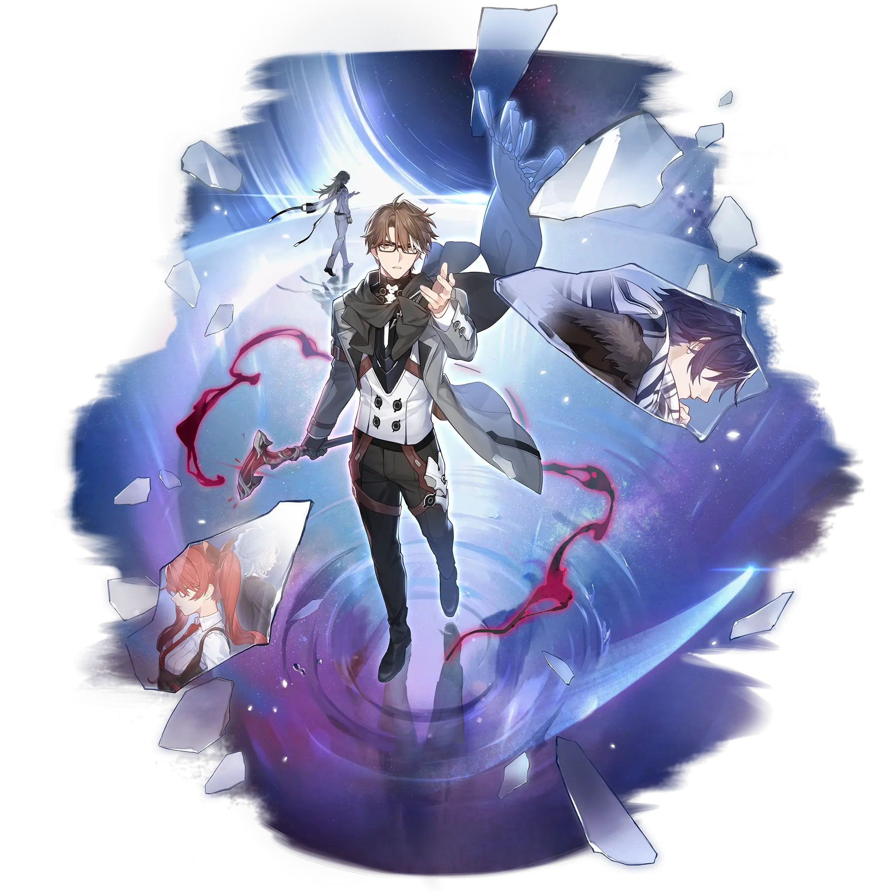

Welt
Best Welt build guide for Honkai Star Rail. See Welt's best Relics, Light Cones, teams, Eidolons, Trace priority, and how to play Welt.
🔍 Detail Skill
Semua skill aktif dan pasif beserta efeknya.
Deals Imaginary DMG equal to #1[i]% of Welt's ATK to a single enemy.
Deals Imaginary DMG equal to #1[i]% of Welt's ATK to one designated enemy and further deals DMG 4 extra times, with each time dealing Imaginary DMG equal to #1[i]% of Welt's ATK to one random enemy. On hit, there is a #2[i]% base chance to reduce the enemy's SPD by 10% for 2 turn(s).
Enemy targets in the "Weightless" state have their DEF reduced by 40% and their SPD reduced by 5%. When Welt attacks an enemy that is already Slowed, he additionally deals Imaginary Additional DMG equal to #1[i]% of his ATK to the enemy.
After using Welt's Technique, create a Special Dimension that lasts for 15 second(s). Enemies in this Special Dimension have their movement speed reduced by 50%. After entering battle with enemies in the Special Dimension, there is a 100% base chance to Imprison the enemies for 1 turn. Imprisoned enemies have their actions delayed by 20% and SPD reduced by 10%. Only 1 Dimension Effect created by a
⚔ Light Cone Terbaik
Diurutkan dari yang paling kuat. Persentase menunjukkan performa relatif terhadap pilihan terbaik.
💎 Relic Set Terbaik
Set terbaik untuk karakter ini, diurutkan berdasarkan prioritas.
📊 Stat Utama
Stat yang dicari pada tiap slot.
👥 Tim yang Direkomendasikan
Karakter yang sering dipasangkan bersama Welt.
 Acheron
Acheron
 Ashveil
Ashveil
 Himeko Nova
Himeko Nova
 Robin Summeretto
Robin Summeretto
 Welt
Welt
🔗 Lanjutkan
Build ini dirangkum dari Prydwen Institute. Starwise tidak menghitung sendiri. Angka bisa berubah setelah patch atau karakter baru rilis.